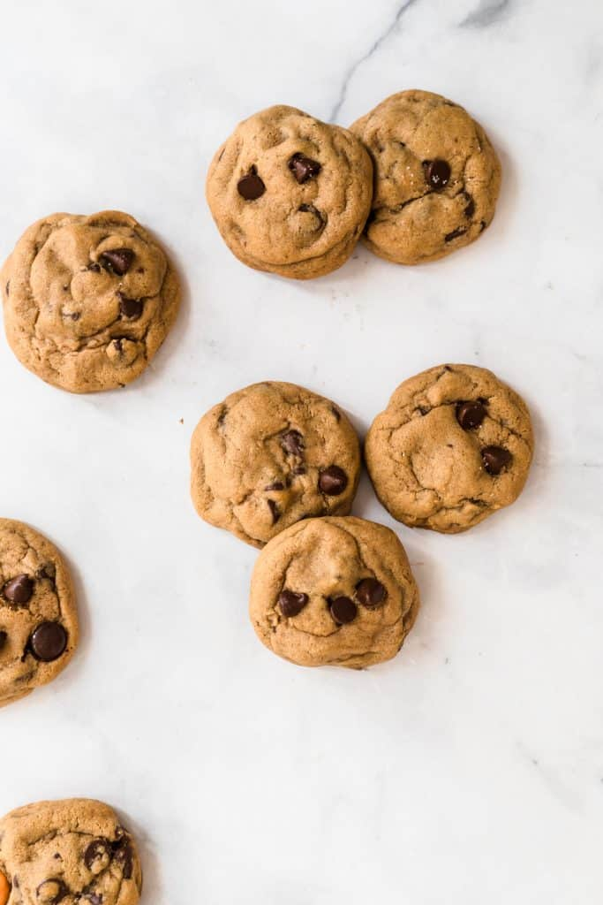

Tasty Chocolate Chip Cookie Recipie

Learn How To Make A Delicious Chip Cookie Recipie
Ingredients
- 2 1/4 cups flour
- 1 teaspoon baking soda
- salt
- 1 1/2 sticks (3/4 cup) room tempurature unsalted butter
- 3/4 cup packed light brown sugar
- 2/3 cups granulated sugar
- 1 teaspoon pure vanilla extract
-
One 12-ounce bag
semisweet chocolate chips
Instructions
-
Pre-heat the oven to 375 F. Line two baking sheets with parchment paper.
-
Whisk together flour, baking soda, and 1 teaspoon salt in a large bowl.
-
Beat the butter and both sugars in a stand mixer with a paddle
attachment (or in a large bowl with a hand mixer) for about 4 minutes
until light and fluffy.
-
Add the eggs one by one, beating after each addition to incorporate.
Beat in the vanilla, reduce the speed to medium, then and add the flour
mixture and beat until incorporated. Sir in the chocolate chips.
-
Scoop 12 heaping tablespoons about two inches apart onto the baking
sheets. Bake for 12-15 minutes until golden brown but still soft in the
middle. Let cool on the baking sheet for a few minutes, then transfer to
a cooling rack to cool completely.
-
Let the baking sheets cool completely. scoop the remaining dough onto
one of the sheets and bake. Store the cookies in a sealed container at
room temp. for up to 5 days.